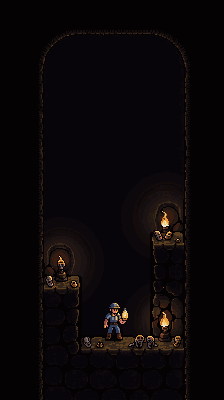
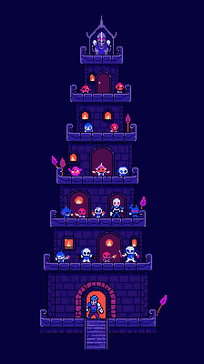
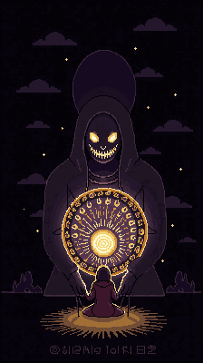
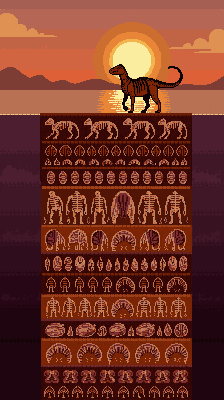
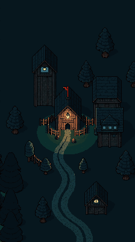

한 판 15~40분짜리로 다시 짰다. 바뀐 것 세 가지: 방치는 핵심에서 "세션 사이" 보조로 내려갔다. 한 판 안의 선택 밀도와 빌드가 핵심이 됐다. 결제 레버에 손실 회피(부활)가 더해졌다. PixelLab을 쓸 수 있게 되면서 품질 높은 방치형 RPG(B)도 후보에 넣었다.
컨셉 이미지 = PixelLab 실제 생성, 후보당 1장. 게임 UI 없이 분위기·구도만 확인하는 용도
$global, $asset)판이 길어지면 잃을 것도 커진다. 25분 원정 끝에 죽는 순간이 가장 쉬운 결제 지점이다.
2주 시즌, 30인 브래킷. 매 시즌 새 판이라 신규도 1등을 노린다. 유저가 적을 땐 과거 기록 고스트로 채운다.
영구 배속 ×2(가장 큰 상품) + 시간 스킵. 세션 사이 성장·준비 시간을 산다.
판당 1회 부활 100 VX. 무제한이면 돈으로 이기는 게임이 되니 1회로 묶는다. 긴 판일수록 전환율이 올라간다.
연결: 리그 점수 = 한 판의 결과. 부활은 기록을 늘리고 배속은 다음 판을 강하게 만든다. 둘 다 순위로 이어진다. 선은 하나 — 파는 건 시간과 두 번째 기회이고, 이기는 건 판단이다.
죽어라. 네 시체가 다음 원정의 발판이 된다.

원정 1회 = 20~30분, 10층 단위 구간. 층마다 다음 방 카드 3장 중 하나를 고른다 — 광맥방(자원), 유물방(빌드), 위험방(고위험·고보상), 가끔 쉼터. 방 안에서는 탭 이동, 캐기, 함정 판단. 유물이 쌓이며 빌드가 생긴다("시체 근처 채굴 ×3", "함정을 밟으면 광석"). HP가 0이 되면 원정이 끝나고 그 층에 시체가 남는다.
버튼 하나. 첫 방에서 광맥을 탭하면 광석이 나온다. 두 번째 방에서 선택 카드 셋이 처음 뜬다. 유물·빌드는 3층부터 열린다 — 첫 화면에 선택지를 늘어놓지 않는다.
유물 조합(v1 20종) + 광부 클래스(기본/폭파공/점술사) + 구간마다 보스 방. 원정마다 빌드가 달라진다.
지난 원정의 시체들이 제 층에서 계속 캔다(오프라인 한도 8h). 다음 원정에서 시체 옆을 지나가면 보급 상자가 있다 — 죽음이 체크포인트가 된다.
시즌 리그 = 원정 한 번에 도달한 최대 층. 결과 카드에 빌드, 도달 층, 쌓인 시체 수가 담긴다.
로그라이트는 오래 붙잡고 반복하게 만드는 힘이 검증된 장르다. "내 시체가 다음 판 발판"은 로그라이트 메타 진행을 새롭게 보여준다. 부활 결제가 가장 자연스럽다.
로그라이트는 전통적으로 인앱결제가 약하다(프리미엄 판매 장르). 클래스·부활·배속으로 채워야 한다. 유물 밸런스 작업이 크다. v1은 유물 20종, 구간 2개(20층)로 자른다.
자는 동안 내 성을 지키고, 깨어나면 네 성을 턴다.

모드가 둘이다. 밤(오프라인, 방치): 몬스터를 편성해 둔 내 마왕성을 자동 방어한다. 다른 유저의 용사 파티와 NPC가 쳐들어온다. 낮(접속, 능동): 내 용사 파티를 이끌고 남의 마왕성을 층층이 공략한다. 성 하나 = 15~30분. 층마다 방을 고르고, 자동전투 중 스킬 타이밍을 누른다.
알림 한 줄: "밤사이 용사 3명이 쳐들어왔다 — 2명 격퇴." 보상을 탭해 받는다. 바로 아래 버튼 [복수하러 간다] → 나를 턴 용사 주인의 성 1층으로 간다. 설명 없이 두 모드가 다 보인다.
몬스터·용사 수집과 강화(방치 RPG 표준 성장축), 성 층 설계(함정·배치), 공격 파티 시너지. 방어 편성과 공격 편성이 따로라 고민이 두 배다.
밤 동안의 방어가 오프라인 수입이다 — 격퇴 보상이 쌓이고 약탈당하면 손실이 난다. 방어 로그가 곧 복수 대상 목록이라 다음 접속 이유가 자동으로 생긴다.
시즌 리그 = 공략 점수 + 방어 점수. 복수전이 경쟁심을 정면으로 건드린다 — "나를 턴 놈"이 실제 유저다. 초기엔 NPC 성과 고스트로 채운다. 공유: 내 성 단면 스크린샷.
Verse8 홈 1번 배너(Heroes Unite)가 증명한 장르이고, 수집·강화·배속으로 이어지는 결제 구조가 다섯 후보 중 가장 검증됐다. 낮/밤 비대칭이 신박함이다. Dungeon Warden의 "던전이 되어라" 컨셉과 경험을 그대로 살린다. PixelLab 캐릭터(8방향 + 애니)가 가장 잘 먹히는 장르다.
물량 최대 — 몬스터·용사 × 애니메이션. v1은 몬스터 10, 용사 4, 성 5층으로 자른다. 비동기 PvP 밸런스: 방어가 너무 세면 공격이 재미없다. 수집형은 가챠 유혹이 크지만 확정 영입을 유지한다(분쟁 = VXShop 권한 박탈 리스크).
악몽 한 편을 끝까지 수선하라. 실 한 가닥이 카드 한 장이다.

꿈 한 편 = 15~25분, 장면 7개를 지나는 노드 맵. 장면마다 악몽이 나오고, 손패의 실 카드로 달랜다. 금실(안전·약함), 은실(균형), 검은실(강하지만 균열 +). 균열이 100%가 되면 꿈이 깨져 판이 끝난다. 끝까지 가면 태피스트리가 완성되고 판다.
악몽 하나, 카드 두 장. 금실을 탭하면 악몽의 불안 수치가 줄고 태피스트리에 첫 무늬가 생긴다. 덱 편집과 노드 맵은 두 번째 꿈부터 열린다.
실 카드 풀(v1 40장), 장면 사이 카드 추가·제거, 꿈 주인(아이·노인·병사…)마다 다른 악몽 패턴.
판 태피스트리가 이자처럼 자란다. 오프라인은 안전한 성장, 접속은 위험한 수선.
시즌 리그 = 꿈 한 편에서 만든 태피스트리 최고가. 균열 90% 이상으로 완주하면 배율 보너스 — 담력이 순위다. 완성 태피스트리 이미지가 공유물.
덱빌더는 장시간이 검증된 장르다. 전투 없는 "수선" 덱빌더는 톤이 새롭다. 한 판의 결과가 그림으로 남는다.
카드 텍스트와 밸런스가 무겁다. 모바일 세로 한 손에서 카드 가독성이 문제라 손패는 4장까지. 덱빌더 결제는 카드 판매로 흐르기 쉬워 파워 판매 경계에 선다.
좋은 화석이 되기 위해, 한 생을 산다.

한 생애 = 25~40분, 계절 5개. 생물로 태어나 계절마다 행동 카드 3장 중 하나를 고른다 — 사냥, 이주, 쉰다, 싸운다, 짝짓는다. 선택이 몸을 바꾼다(뿔이 자라고, 이빨이 빠지고, 상처가 남는다). 늙어 죽으면 묻히고, 몸에 남은 것이 화석이 된다. 먼 미래 발굴자가 감정가를 매긴다.
알이 깨진다. 행동 카드 "먹는다" 하나를 탭하면 몸이 커지고 화석 예상 칸에 뼈 하나가 찬다. "사는 방식 = 남는 모양"이 바로 보인다.
종(초식/포식/수생/비행) × 환경 사건(빙하기·홍수·운석). 상처·질병·변이가 희귀도를 만든다 — 잘 사는 게 아니라 이상하게 살아야 희귀해진다.
마지막 화석이 박물관에 전시되고 관람료가 쌓인다. 다음 생물은 전 세대 화석 층 위에서 태어나 계승 보너스를 받는다.
시즌 박물관 리그 = 최고 감정가 표본. 표본 카드에 실루엣, 학명, 사인(死因)이 담긴다.
"화석이 되기 위해 산다"는 목표를 뒤집은 전례 없는 설정이다. 한 생애의 서사가 길게 붙잡는다. 이미지 보면 알겠지만 지층 단면이 그대로 세로 화면이다.
물량 최대 — 종 × 성장 단계 × 변이. 선택이 결과로 이어지는 인과가 안 보이면 지루해진다. v1은 종 하나로 시작한다.
마을 하나를 소문만으로 무너뜨려라.

시나리오 한 편 = 마을 하나, 30~60분, 하루 단위 저장. 주민 20명과 목표가 주어진다 — "7일 안에 촌장을 몰아내라." 매일 소문 카드 3장(대상 + 사건)을 받아 주민에게 심는다. 밤이 지나면 관계망을 따라 퍼지며 변질된다. 주민의 신뢰·의심 수치가 오르내리고, 재판·선거·축제 같은 사건이 끼어든다. 들키면 내가 추방된다.
목표 한 줄, 카드 한 장, 주민 한 명. 심는다 → 밤 → 아침에 소문이 변질돼 옆집으로 번진 게 보인다.
시나리오별로 마을 구조와 목표가 다르다. 주민 성격(수다쟁이·의심꾼·입 무거운 자), 소문 조합 폭발. 누구에게 먼저 심을지가 판을 가르는 퍼즐 같은 전략이다.
진행 중인 시나리오의 밤이 실시간으로 흐른다(오프라인 = 밤). 숙성 배속이 여기에 붙는다.
시즌 리그 = 시나리오별 최단 일수 클리어. 변질 이력 카드("촌장이 도둑질 → 살인 → 왕위를 노린다")는 그 자체로 웃긴 공유물.
기존에 없는 장르 — 소문 전략 시뮬. 텍스트 중심이라 물량 대비 깊이가 가장 크다. 시나리오 팩이 자연스러운 유료 콘텐츠가 된다.
한국어 문장 생성과 조사 처리(이/가, 을/를). 첫 시나리오가 너무 쉬우면 얕아 보인다. 주민 20명 관계망을 세로 화면에 담으려면 확대·축소가 필요하다.
1~5. 세션 깊이 = 한 판을 30분 붙잡는 힘(선택 밀도, 빌드 다양성). 물량 적음 = PixelLab 생성 횟수와 텍스트·밸런스 작업량. 경쟁 훅 = 리그 지표가 숫자 하나로 바로 비교되는가.
| 후보 | 장르 | 유입 훅 | 결제 동기 | 애착 | 물량 적음 | 세션 깊이 | 경쟁 훅 | 합계 | 한 판 | 생성 |
|---|---|---|---|---|---|---|---|---|---|---|
| A 시체 광산 | 로그라이트 | 5 | 4 | 4 | 3 | 5 | 5 | 26 | 20~30분 | ≈50 |
| B 낮엔 용사 밤엔 마왕 | 방치형 RPG | 4 | 5 | 5 | 2 | 5 | 5 | 26 | 15~30분 | ≈90 |
| E 소문 양조장 | 전략 시뮬 | 5 | 4 | 3 | 4 | 5 | 4 | 25 | 30~60분 | ≈35 |
| C 꿈수선공 | 덱빌더 | 4 | 4 | 4 | 3 | 5 | 4 | 24 | 15~25분 | ≈55 |
| D 화석이 되는 법 | 생애 시뮬 | 5 | 4 | 4 | 2 | 4 | 4 | 23 | 25~40분 | ≈65 |
A와 B가 26점 동률이다. 갈리는 기준은 당신 목표인 인앱결제 매출이다.
B 낮엔 용사, 밤엔 마왕을 추천한다. 수집·강화·배속·복수전이라는 결제 구조가 다섯 중 가장 검증됐다. Verse8 홈 배너가 방치형 RPG다. 방치(밤)와 장시간 능동(낮)을 둘 다 가져가고, Dungeon Warden의 "던전이 되어라"를 살린다. 약점인 물량은 PixelLab Tier 1(월 2,000회) 기준으로 v1 90회라 감당된다.
A 시체 광산은 신박함 1순위지만, 로그라이트는 인앱결제가 약한 장르다. 한 가지 방법은 A의 "죽음이 다음 판 발판" 아이디어를 B에 이식하는 것이다 — 쓰러진 몬스터가 성의 망령 수비대가 된다.
E는 가장 새로운 장르이고 물량도 가장 적어 두 번째 프로젝트로 좋다. C·D는 보류.
다음 단계: B를 고르면 v1 범위(몬스터 10, 용사 4, 성 5층)로 설계 문서를 쓰고, PixelLab으로 몬스터 1종을 8방향 + 애니메이션까지 뽑아 품질을 먼저 검증한다.